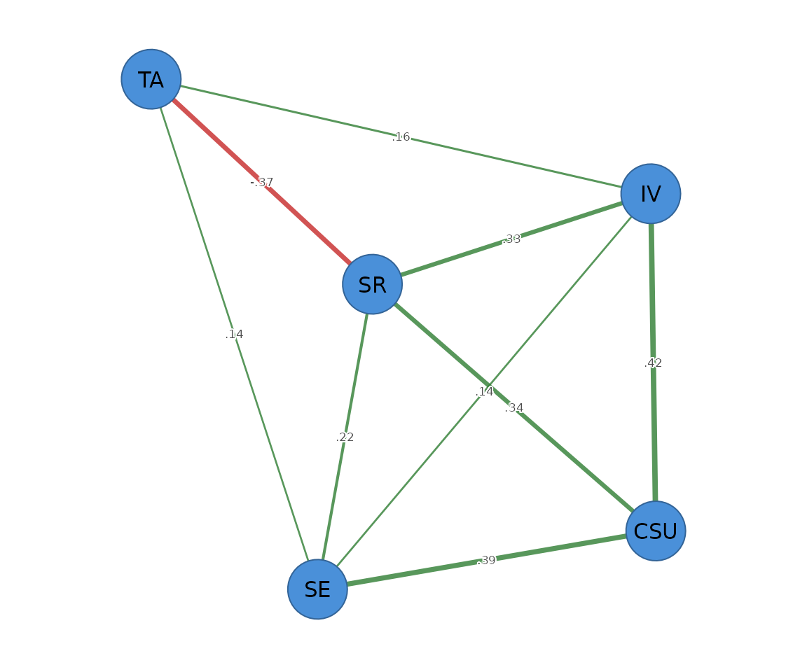

method = "ggm" is a different philosophy from the
graphical lasso. The lasso shrinks every edge toward zero; the
stepwise GGM uses the lasso path only to propose
candidate graphs, then refits the unregularized
maximum-likelihood precision on each and picks the best by extended BIC,
refining it with a greedy edge add/drop search. The retained edges are
therefore not shrunk – they are the exact partial
correlations for the selected structure. It is equivalent to
qgraph::ggmModSelect() (accepted as the alias
"ggmModSelect") and self-certified by the constrained-MLE
stationarity residual.
ms <- psychnet(SRL_GPT, method = "ggm")
ms
#> <psychnet> ggm network
#> nodes: 5 edges: 9 (undirected)
#> optimality (KKT residual): 1.22e-15
certificate(ms)
#> method certificate kind certified
#> 1 ggm 1.221245e-15 kkt TRUEBecause it does not shrink, the stepwise GGM’s retained edges are larger in magnitude than the lasso’s on the same data. Compare the two edge lists:
as.data.frame(psychnet(SRL_GPT, method = "glasso")) # shrunk
#> from to weight
#> 1 CSU IV 0.41166866
#> 2 CSU SE 0.38290223
#> 3 IV SE 0.15992605
#> 4 CSU SR 0.35481359
#> 5 IV SR 0.31909443
#> 6 SE SR 0.20767208
#> 7 CSU TA 0.04906668
#> 8 IV TA 0.11058735
#> 9 SE TA 0.09871818
#> 10 SR TA -0.34985157
as.data.frame(ms) # unshrunk
#> from to weight
#> 1 CSU IV 0.4215770
#> 2 CSU SE 0.3921754
#> 3 IV SE 0.1416604
#> 4 CSU SR 0.3385710
#> 5 IV SR 0.3333520
#> 6 SE SR 0.2173406
#> 7 IV TA 0.1565223
#> 8 SE TA 0.1368928
#> 9 SR TA -0.3699703The default gamma is 0 (plain BIC),
matching qgraph::ggmModSelect() – the unregularized refit
does not need the extra EBIC penalty.
net_predict(ms)
#> node type metric predictability accuracy
#> 1 CSU gaussian R2 0.8327378 NA
#> 2 IV gaussian R2 0.7831430 NA
#> 3 SE gaussian R2 0.7279821 NA
#> 4 SR gaussian R2 0.7920188 NA
#> 5 TA gaussian R2 0.1656566 NAPass the network object to cograph::splot() with
psych_styling = TRUE (spring layout, green = positive, red
= negative). For a non-glasso network ask for the predictability ring
explicitly with predictability = TRUE.
cograph::splot(ms, psych_styling = TRUE, predictability = TRUE)
See net_crosswalk("ggmModSelect") for the argument map
against qgraph.